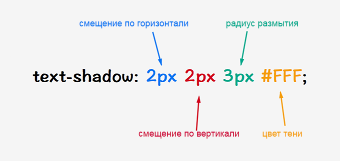

1. Понятие блоков в CSS
В CSS используется модель представления визуально отображаемых элементов документа в виде прямоугольных блоков, возможно, вложенных друг в друга.
Каждый такой блок имеет информационное содержимое (текст, изображения и т.д.), а также может иметь отступы (padding), границы (border) и поля (margin). Соответствующие свойства CSS позволяют оформить блок желаемым образом. Например, блоку, который обтекается этим текстом заданы отступы, границы, поля, ширина. Обтекание задается свойством float.
Следующая иллюстрация представляет взаимное расположение полей, границ и отступов:

Используйте справочник CSS-свойств во вкладке "Инфо".
Для блоков наиболее актуальны разделы размеры, рамки, отступы, позиционирование.
Далее подробнее рассмотрим стилизацию border.
2. Работа с рамками
CSS-рамка элемента представляет собой одну или несколько линий, окружающих содержимое элемента и его отступы padding. Рамка задаётся с помощью краткого свойства border. Стиль рамки задается с помощью трех свойств: стиль, цвет и ширина.
2.1. Стиль рамки
По умолчанию рамки всегда отрисовываются поверх фона элемента, фон распространяется до внешнего края элемента. Стиль рамки определяет ее отображение, без этого свойства рамки не будут видны вообще. Для элемента можно задавать рамку для всех сторон одновременно с помощью свойства border-style или для каждой стороны отдельно с помощью уточняющих свойств border-top-style и т.д.
| Значения: | |
none |
Значение по умолчанию, означает отсутствие рамки. Также убирает рамку элемента из группы элементов с установленным значением данного свойства. |
hidden |
Эквивалентно none. |
dotted |
dotted |
dashed |
dashed |
solid |
solid |
double |
double |
groove |
groove |
ridge |
ridge |
inset |
inset |
outset |
outset |
{1,4} |
Одновременное перечисление четырех разных стилей для рамок элемента, только для свойства
|
initial |
Устанавливает значение свойства в значение по умолчанию. |
inherit |
Наследует значение свойства от родительского элемента. |
2.2. Цвет рамки
Свойство border-color задаёт цвет рамок всех сторон одновременно. С помощью уточняющих свойств можно установить свой цвет для рамки каждой стороны элемента. Если для рамки цвет не задан, то он будет таким же, как и цвет текста элемента. Если в элементе нет текста, то цвет рамки будет таким же, как и цвет текста родительского элемента.
| Значения: | |
transparent |
Устанавливает прозрачный цвет для рамки. При этом ширина рамки остается. Можно использовать для смены цвета рамки при наведении курсора мыши на элемент, чтобы избежать смещение элемента. |
| цвет | Цвет рамок задается при помощи значений свойства color.
{border-color: #7c8299;} |
{1,4} |
Одновременное перечисление четырех разных цветов для рамок элемента, только для свойства
|
initial |
Устанавливает значение свойства в значение по умолчанию. |
inherit |
Наследует значение свойства от родительского элемента. |
2.3. Ширина рамки
Ширина рамки border-width задается с помощью единиц измерения длины или ключевых слов. Если для свойства border-style задано значение none, и для рамки элемента установлена какая-то ширина, то в данном случае ширина рамки приравнивается к нулю.
| Значения: | |
thin / medium / thick |
Ключевые слова, устанавливают ширину рамки относительно друг друга. Первое значение уже, чем второе, второе — тоньше третьего. Значение по умолчанию — medium |
width (px, em) |
{border-width: 5px;} |
{1,4} |
Возможность одновременного задания четырех разных ширин для рамок элемента, только для свойства
|
initial |
Устанавливает значение свойства в значение по умолчанию. |
inherit |
Наследует значение свойства от родительского элемента. |
Существует возможность задать стилизацию рамки одним свойством. Свойство border позволяет объединить в себе следующие свойства: border-width, border-style, border-color, например:
border: 2px solid grey;
При этом заданные свойства будут применяться ко всем границам элемента одновременно. Если какое-то из значений не указано, его место займет значение по умолчанию.
3. Колонки
Модуль CSS3 columns описывает многоколоночный макет, который позволяет организовать содержимое так, чтобы оно занимало несколько вертикальных контейнеров, подобно газете или журналу. Колонки могут содержать заголовки, текст, таблицы, картинки и любые другие inline-элементы.
Определение количества и ширины колонок является основополагающим при построении многоколоночного макета. Свойства column-count и column-width используются для установки количества и ширины колонок.
Третье свойство, columns, является сокращенным свойством, которое устанавливает ширину и количество колонок одновременно.
Другие факторы, такие как явные разрывы столбцов, содержимое и ограничения высоты, могут влиять на фактическое количество и ширину колонок.
Свойство column-width указывает минимальную ширину, которую должен занимать каждый столбец.
| column-width | |
|---|---|
| Значения: | |
auto |
Означает, что ширина столбца будет определяться другими свойствами (например, column-count, если оно имеет значение, отличное от auto). Значение по умолчанию. |
| длина | Ширина колонок задаётся в единицах длины, кроме %. Фактическая ширина столбца может быть больше (для заполнения доступного пространства) или уже (только если доступное пространство меньше указанной ширины столбца). Отрицательные значения не допускаются. Используемые значения будут ограничены минимум 1px. |
initial |
Устанавливает значение свойства в значение по умолчанию. |
inherit |
Наследует значение свойства от родительского элемента. |
Свойство column-count описывает количество колонок, а их ширина будет рассчитываться, исходя из ширины доступного пространства. Если одновременно с column-count задается column-width, то значение column-count будет считаться максимальным числом колонок.
| column-count | |
|---|---|
| Значения: | |
auto |
Означает, что количество столбцов будет определяться другим свойством, например, column-width, если оно также не имеет значение auto. Значение по умолчанию. |
| число | Описывает максимальное количество колонок. Значение задаётся целым числом, должно быть больше 0. |
initial |
Устанавливает значение свойства в значение по умолчанию. |
inherit |
Наследует значение свойства от родительского элемента. |
Свойство columns — это сокращенное свойство для установки column-width и column-count. Опущенные значения устанавливаются в их начальные значения.
columns: 12em; /* column-width: 12em; column-count: auto */ columns: auto 12em; /* column-width: 12em; column-count: auto */ columns: 2; /* column-width: auto; column-count: 2 */ columns: 2 auto; /* column-width: auto; column-count: 2 */ columns: auto; /* column-width: auto; column-count: auto */ columns: auto auto; /* column-width: auto; column-count: auto */ columns: inherit; columns: initial;
4. Разделители между колонками
Промежутки между колонками и разделительные линии помещаются между колонками в одном многоколоночном контейнере. Длина промежутков и разделительных равна высоте колонки. Промежутки в колонках занимают место, то есть, они раздвигают содержимое в соседних колонках.
Разделительная линии рисуется в середине промежутка между колонками, не занимая места. То есть наличие или толщина разделительной линии не изменит размещение чего-либо еще.
Линии закрашиваются чуть выше границы многоколоночного элемента. Если элемент имеет область прокрутки, разделительные линии прокручиваются вместе с колонками. Разделительные линии отображаются только между двумя колонками, которые имеют содержимое.
Свойство column-gap определяет разрыв между колонками. Если для колонок установлена разделительная линия с помощью свойства column-rule, то эта линия будет расположена посередине промежутка, а ее ширина не изменит общую ширину.
| column-gap | |
|---|---|
| Значения: | |
| длина | Промежуток между колонками задается в единицах длины. Значения не могут быть отрицательными. Процентное значение может быть удалено из спецификации. |
normal |
Эквивалентно 1em. Значение по умолчанию. |
initial |
Устанавливает значение свойства в значение по умолчанию. |
inherit |
Наследует значение свойства от родительского элемента. |
Свойство column-rule-color определяет цвет разделительной линии.
Свойство column-rule-style устанавливает стиль разделительной линии.
| column-rule-style | |
|---|---|
| Значения: | |
none |
Значение вычисляется в 0. Значение по умолчанию. |
hidden |
Аналогично со значением none, линия скрыта. |
dotted |
Отображает линию набором квадратных точек. |
dashed |
Отображает линию как последовательность из тире. |
solid |
Обычная линия. |
double |
Отображает разделительную линию в виде двух параллельных тонких линий, расположенных на некотором расстоянии между собой. Толщина разделительной линии не указывается, но сумма линий и промежутка между ними равна значению column-rule-width. |
groove |
Отображает линию объемной, вдавленной в полотно. Это достигается путем создания тени из двух цветов, один из которых темнее, другой — светлее. |
ridge |
Отображает разделительную линию объемной, т.е. эффект, противоположный groove. |
inset |
Отображает сплошную линию цветом темнее, чем заданный цвет линии. |
outset |
Отображает сплошную линию цветом, заданным свойством column-rule-color. |
initial |
Устанавливает значение свойства в значение по умолчанию. |
inherit |
Наследует значение свойства от родительского элемента. |
Свойство column-rule-width устанавливает ширину разделительной линии. Отрицательные значения не допускаются. Не работает без свойства column-rule-style.
| column-rule-width | |
|---|---|
| Значения: | |
thin |
Тонкая линия. |
medium |
Значение по умолчанию. Средняя толщина линии. |
thick |
Утолщенная линия. |
| длина | Ширина разделительной линии задается в единицах длины. |
initial |
Устанавливает значение свойства в значение по умолчанию. |
inherit |
Наследует значение свойства от родительского элемента. |
Свойство column-rule является сокращенной записью свойств column-rule-width column-rule-style column-rule-color.
column-rule: dotted; column-rule: solid 8px; column-rule: solid blue; column-rule: thick inset blue; column-rule: inherit; column-rule: initial;
4.1. Разрыв колонок
Когда содержимое размещено в нескольких колонках, браузер должен определить, где размещаются разрывы колонок. Проблема разбиение контента на колонки аналогична разбиению контента на страницы. Для решения этого вопроса было введено три новых свойства, позволяющих описывать разрывы столбцов в тех же свойствах, что и разрывы страниц: break-before, break-after и break-inside.
5. Охват колонок: свойство column-span
Свойство column-span позволяет элементу охватывать несколько столбцов. Указывается не для блока-контейнера, а для для конкретного элемента внутри, например, для заголовка.
В будущем будет возможно указать количество колонок для охвата, подобно атрибуту colspan, который может быть применен к ячейке таблицы, но в спецификации CSS3 есть только два возможных значения: none и all. Свойство не работает по умолчанию в Firefox.
| column-span | |
|---|---|
| Значения: | |
none |
Содержимое элемента отображается в пределах одной колонки. Значение по умолчанию. |
all |
Элемент охватывает все колонки. Колонка разбивается в том месте, где отображается элемент. |
initial |
Устанавливает значение свойства в значение по умолчанию. |
inherit |
Наследует значение свойства от родительского элемента. |
6. Заполнение колонок содержимым: свойство column-fill
Свойство column-fill контролирует заполнение колонок содержимым. Существует две стратегии заполнения колонок: колонки могут быть выровнены по высоте или нет. Если колонки выровнены, браузеры должны попытаться минимизировать изменения высоты колонки, учитывая при этом вынужденные разрывы, widows, orphans и другие свойства, которые могут влиять на высоту колонок. Если колонки не выровнены, они заполняются последовательно, некоторые из них могут быть частично заполнены или вообще не заполнены.
| column-fill | |
|---|---|
| Значения: | |
auto |
Заполняет колонки последовательно. |
balance |
Отображает содержимое одинаково во всех колонках. Значение по умолчанию. |
balance-all |
Выравнивает содержимое равномерно между колонками, насколько это возможно. |
initial |
Устанавливает значение свойства в значение по умолчанию. |
inherit |
Наследует значение свойства от родительского элемента. |
7. Переполнение
За исключением случаев, когда это может привести к разрыву колонки, содержимое, которое выходит за границы колонки, выходит за ее границы и не обрезается. Это касается, в первую очередь, изображений. Чтобы решить эту проблему, нужно установить для изображений следующие свойства:
img {
display: block; /*убираем нижний отступ под картинкой*/
width: 100%; /*растягиваем изображение на всю ширину блока-контейнера*/
}
Содержимое и разделительные линии, которые выходят за рамки колонок по краям многоколоночного контейнера, обрезаются в соответствии со свойством overflow.
Многоколоночный контейнер может иметь больше колонок, чем у него есть для этого места из-за ограничения высоты колонок (например, с помощью height или max-height) и явных разрывов колонок. В этом случае дополнительные колонки создаются в направлении строки, перемещаясь на следующие страницы.
8. Стилизация текста
Модуль CSS-текст описывает функции CSS, которые управляют переводом исходного текста в форматированный и переносом строк. Различные свойства CSS обеспечивают контроль над преобразованием регистра, обработкой пробелов, правилами переноса и переносом текста и строк, выравниванием, интервалами и отступами.
Свойство text-transform стилизует текст. Оно не влияет на базовое содержимое и не должно влиять на содержимое операции копирования и вставки простого текста.
| text-transform | |
|---|---|
| Значения: | |
none |
Значение по умолчанию, означает отсутствие эффектов. |
capitalize |
Изменяет написание первой буквы каждого слова в элементе, делая её прописной. |
uppercase |
Выводит все слова в элементе прописными буквами. |
lowercase |
Выводит все слова в элементе строчными буквами. |
initial |
Устанавливает значение свойства в значение по умолчанию. |
inherit |
Наследует значение свойства от родительского элемента. |
Свойство white-space обрабатывает пробелы между словами и переносы строк внутри элемента.
| white-space | |
|---|---|
| Значения: | |
normal |
Значение по умолчанию. Между словами вставляется только по одному пробелу, дополнительные пробелы отбрасываются. Текст переносится только в случае необходимости. |
nowrap |
Запрещает переносы строк, за исключением применения <br>. |
pre |
Пробелы в тексте не игнорируются, браузер отображает дополнительные пробелы и переносы строк. |
pre-wrap |
Сохраняет пробелы в тексте, делая разрывы строк там, где это необходимо. |
pre-line |
Удаляет лишние пробелы, за исключением случаев <br>. |
break-spaces |
Поведение идентично pre-wrap, за исключением того, что: любая последовательность неудаляемых пробелов всегда занимает место, в том числе в конце строки; возможность переноса строки существует после каждого неудаляемого пробела, в том числе между пробелами. |
initial |
Устанавливает значение свойства в значение по умолчанию. |
inherit |
Наследует значение свойства от родительского элемента. |
8.1. Расположение текста
Выравнивание и выключка строк контролируют, как встроенный контент распределяется в линейном блоке.
Блок текста представляет собой набор линейных блоков. Свойство text-align задает свойства text-align-all и text-align-last и описывает, как блоки на уровне строки в каждом линейном блоке выравниваются относительно начальной и конечной сторон линейного блока. Значения, отличные от justify-all или match-parent, присваиваются text-align-all и сбрасываются в text-align-last на auto.
| text-align | |
|---|---|
| Значения: | |
start |
Содержимое на уровне строки выравнивается по начальному краю линейного блока. Значение по умолчанию. |
end |
Содержимое на уровне строки выравнивается по конечному краю линейного блока. |
left |
Содержимое на уровне строки выравнивается по левому краю строки линейного блока. В вертикальных системах письменности это будет физический верх или низ, в зависимости от ориентации текста. |
right |
Содержимое на уровне строки выравнивается по правому краю строки линейного блока. В вертикальных системах письменности это будет физический верх или низ, в зависимости от ориентации текста. |
center |
Содержимое на уровне строки центрируется внутри линейного блока. |
justify |
Текст выравнивается по ширине линейного блока, чтобы точно заполнить поле строки, прижимаюсь к левому и правому краям родительского элемента. Если иное не указано в text-align-last, последняя строка перед принудительным разрывом или конец блока выравнивается по началу. Пробелы между словами и буквами распределяются таким образом, чтобы длина всех строк была равна. Разные браузеры могут увеличить как отступы между словами, так и интервалы между буквами. |
justify-all |
Устанавливает text-align-all и text-align-last в justify, также выравнивая последнюю строку. |
match-parent |
Значение ведет себя так же, как inherit за исключением того, что унаследованное значение start или end интерпретируется относительно значения direction (или исходного содержащего блока, если нет родителя) и приводит к вычисленному значению left или right. |
inherit |
Наследует значение свойства от родительского элемента. |
Свойство text-align-all — сокращенный вариант свойства text-align определяет выравнивание всех строк содержимого в контейнере блока, за исключением последних строк, переопределенных значением text-align-last. Принимает значения start, end, left, right, center, justify и match-parent.
Свойство text-align-last описывает, как выравнивается последняя строка блока или строки непосредственно перед принудительным разрывом строки.
Если задано значение auto, содержимое в соответствующей строке выравнивается по text-align-all, если только для text-align-all не настроено justify — в этом случае оно выравнивается по началу блока. Все остальные значения интерпретируются как описано для text-align.
Принимает значения auto, start, end, left, right, center, justify и match-parent.
Промежутки между словами
CSS позволяет контролировать промежутки между словами и типографскими символами с помощью свойств word-spacing и letter-spacing.
Свойство word-spacing определяет дополнительный интервал между словами.
Устанавливает интервалы между словами. Можно использовать положительные и отрицательные значения. При отрицательном значении слова могут накладываться друг на друга.
| word-spacing | |
|---|---|
| Значения: | |
normal |
Дополнительный интервал не применяется. Вычисляет в 0. Значение по умолчанию. |
| длина | Задает дополнительный интервал в дополнение к внутреннему интервалу между словами, определенному шрифтом. Значения могут быть отрицательными, но могут быть ограничения, зависящие от реализации. |
initial |
Устанавливает значение свойства в значение по умолчанию. |
inherit |
Наследует значение свойства от родительского элемента. |
Отступ первой строки
Свойство text-indent задает отступ, применяемый к строкам встроенного содержимого в блоке. Отступ обрабатывается как поле, примененное к начальному краю линейного блока.
Если в первой строке блочного элемента присутствует изображение, то оно сдвинется вместе с остальным текстом.
| text-indent | |
|---|---|
| Значение: | |
длина/% |
Размер отступа в виде абсолютной длины. Процентное значение вычисляется от собственной логической ширины блока-контейнера. Значение по умолчанию 0. |
each-line |
Отступы затрагивают первую строку каждого блока-контейнера и каждую строку после принудительного разрыва строки (но не строки после с мягким переносом). |
hanging |
Обратное преобразование. Все строки, кроме первой, будут с отступом. |
initial |
Устанавливает значение свойства в значение по умолчанию. |
inherit |
Наследует значение свойства от родительского элемента. |
9. Шрифты
Свойство font-family используется для выбора начертания шрифта. Поскольку невозможно предсказать, установлен тот или иной шрифт на компьютере посетителя вашего сайта, рекомендуется прописывать все возможные варианты однотипных шрифтов. В таком случае браузер будет проверять их наличие, последовательно перебирая предложенные варианты.
| font-family | |
|---|---|
| Значения: | |
| family-name | Название (имя) семейства шрифтов, например, Times, Courier, Arial. Рекомендуется указывать вместе с базовым семейством. |
| generic-family | Базовое семейство. CSS определяет пять базовых семейств шрифтов: Шрифты с засечками — Serif (Times New Roman, Times, Garamond, Georgia) Рубленые шрифты — Sans-serif (Helvetica, Geneva, Arial, Verdana, Trebuchet, Univers) Моноширинные шрифты — Monospace (Courier, Courier New, Andele Mono) Рукописные шрифты — Cursive (Comic Sans, Gabriola, Monotype Corsiva, Author, Zapf Chancery) Аллегорические шрифты (Western, Woodblock, Klingon) |
initial |
Устанавливает значение свойства в значение по умолчанию. |
inherit |
Наследует значение свойства от родительского элемента. |
Пример:
font-family: "Times New Roman", Georgia, Serif; font-family: serif; font-family: sans-serif; font-family: monospace; font-family: cursive; font-family: fantasy; font-family: system-ui; font-family: inherit; font-family: initial;
Свойство font-weight задаёт насыщенность шрифта.
| font-weight | |
|---|---|
| Значения: | |
normal |
Значение по умолчанию, устанавливает нормальную насыщенность шрифта. Эквивалентно значению насыщенности, равной 400. |
bold |
Делает шрифт текста полужирным. Эквивалентно значению насыщенности, равной 700. |
bolder |
Насыщенность шрифта будет больше, чем у предка. |
lighter |
Насыщенность шрифта будет меньше, чем у предка. |
100, 200, 300, 400, 500, 600, 700, 800, 900 |
Значение 100 соответствует самому легкому варианту начертания шрифта, а 900 — самому плотному. При этом, эти числа не определяют конкретной плотности, т.е. 100, 200, 300 и 400 могут соответствовать одному и тому же варианту слабой насыщенности начертания шрифта; 500 и 600 — средней насыщенности, а 700, 800 и 900 могут выводить одинаковое очень насыщенное начертание. Распределение плотности так же зависит от количества уровней насыщенности, определенных в конкретном семействе шрифтов. |
initial |
Устанавливает значение свойства в значение по умолчанию. |
inherit |
Наследует значение свойства от родительского элемента. |

Свойство font-style позволяет выбрать стиль начертания для шрифта. При этом разница между курсивом и наклонным начертанием заключается в том, что курсив вносит небольшие изменения в структуру каждого символа, в то время как наклонное начертание представляет собой наклонную версию прямого шрифта.
| font-style | |
|---|---|
| Значения: | |
normal |
Значение по умолчанию, устанавливает для текста обычное начертание шрифта. |
italic |
Выделяет текст курсивом. |
oblique |
Устанавливает наклонное начертание шрифта. |
initial |
Устанавливает значение свойства в значение по умолчанию. |
inherit |
Наследует значение свойства от родительского элемента. |
Свойство font-size указывает желаемую высоту глифов из шрифта.
| font-size | |
|---|---|
| Значения: | |
| absolute-size | xx-small, x-small, small, medium, large, x-large, xx-large. В качестве стандартного размера принимается medium. В CSS1 предложенный коэффициент масштабирования между соседними индексами составлял 1.5, что для пользователя оказалось слишком большим. В CSS2 предложенный коэффициент масштабирования для экрана компьютера между смежными индексами составлял 1.2, что все еще создавало проблемы для небольших размеров. Новый коэффициент масштабирования варьируется между каждым индексом, чтобы обеспечить лучшую читаемость. |
| relative-size | smaller, larger. Относительные размеры обусловливают изменение размера шрифта элемента относительно родителя. При этом размер шрифта может выйти за рамки размеров, предполагаемых для xx-small и xx-large. |
| длина | Размер шрифта устанавливается с помощью положительных значений единиц длины, например, px, em, как целых, так и дробных. |
% |
Относительное значение, вычисляется на основании любого размера, унаследованного от родительского элемента. Обеспечивает более точную настройку вычисляемого размера шрифта. Задание размеров шрифта с помощью em эквивалентно процентному значению. |
initial |
Устанавливает значение свойства в значение по умолчанию. |
inherit |
Наследует значение свойства от родительского элемента. |
| Значения absolute-size | |||||||
|---|---|---|---|---|---|---|---|
xx-small |
x-small |
small |
medium |
large |
x-large |
xx-large |
|
| Коэффициент масштабирования | |||||||
| 3/5 | 3/4 | 8/9 | 1 | 6/5 | 3/2 | 2/1 | 3/1 |
| HTML заголовки | |||||||
| h6 | h5 | h4 | h3 | h2 | h1 | ||
| HTML размер шрифта | |||||||
| 1 | 2 | 3 | 4 | 5 | 6 | 7 | |
10. Тень текста
Свойство text-shadow используется для добавления тени к тексту. Тень текста — интересный инструмент, который позволяет создавать удивительные эффекты. Тени могут быть однослойными или многослойными, размытыми, цветными или полупрозрачными. Задавая тень для элемента, можно указывать только одно значение длины и цвет, таким образом создавая цветную копию отдельного символа или слова. Также, с помощью тени можно сделать текст более читаемым, если контраст между цветом текста и фоном невелик.
Каждая тень применяется как к самому тексту, так и к элементам его оформления (свойство text-decoration). Одновременно можно задавать несколько теней, указывая их через запятую. Тени накладываются друг на друга, но не перекрывают сам текст. Первая тень всегда расположена сверху над остальными тенями. Свойство наследуется.
Каждая тень определяется двумя или тремя значениями длины и необязательным цветом. Допустимы длины, равные 0.

| text-shadow | |
|---|---|
| Значения: | |
| x-offset | Задает горизонтальное смещение тени. Положительное значение рисует тень, смещенную вправо от текста, отрицательная длина — влево. |
| y-offset | Задает вертикальное смещение тени. Положительное значение смещает тень вниз, отрицательное — вверх. |
| blur | Задает радиус размытия. Отрицательные значения не допускаются. Если значение размытия равно нулю, то край тени четкий. В противном случае, чем больше значение, тем больше размыт край тени. |
| цвет | Задает цвет тени. Если цвет отсутствует, используемый цвет берется из свойства color. |
none |
Значение по умолчанию, означает отсутствие тени текста. Убирает тень элемента из группы элементов с заданным свойством. |
initial |
Устанавливает значение свойства в значение по умолчанию. |
inherit |
Наследует значение свойства от родительского элемента. |
В отличие от box-shadow, текстовые тени не обрезаются и могут отображаться, если текст частично прозрачен. Как и box-shadow, текстовые тени не влияют на макет и не вызывают прокрутку или увеличение размера прокручиваемой области.
text-shadow: 2px 2px 4px pink; text-shadow: #fc0 1px 0 10px; text-shadow: 5px 5px #4D4644; text-shadow: blue 2px 5px; text-shadow: 5px 10px; text-shadow: inherit; text-shadow: initial;
10.1. Примеры тени
Ниже приведены несколько примеров стилизации текста с помощью теней. Просмотрите и разберитесь в коде их создания.
Плакатная тень
Стиль тени текста 1
.text-shadow-1 {
background-color: #333333;
color: white;
text-shadow: -2px -2px 0 #4D4644, 2px -2px 0 #4D4644, -2px 2px 0 #4D4644, 2px 2px 0 #4D4644, 4px 4px 0 white, 5px 5px 0 white, 6px 6px 0 white;
letter-spacing: 0.1em;
}
3D тень
Стиль тени текста 2
.text-shadow-2 {
background: linear-gradient(-45deg, #FEE864, #F5965E);
color: #f4f4f4;
text-shadow: -1px -1px white, 1px 1px gray, 2px 2px #7a7a7a, 3px 3px #757575, 4px 4px #707070, 5px 5px #6b6b6b, 6px 6px #666666, 7px 7px #616161, 8px 8px #5c5c5c, 9px 9px #575757, 10px 10px #525252, 11px 11px #4d4d4d, 18px 18px 30px rgba(0, 0, 0, .4), 18px 18px 10px rgba(0, 0, 0, .4);
}
Ретро-тень
Стиль тени текста 3
.text-shadow-3 {
background-color: #222222;
color: #FB631E;
letter-spacing: .1em;
text-shadow: 4px 4px white, 6px 6px #D7CC88;
}
Неоновая тень
Стиль тени текста 4
.text-shadow-4 {
background: black;
color: white;
text-shadow: 0 0 5px white, 0 0 10px white, 0 0 15px white, 0 0 20px crimson, 0 0 35px crimson, 0 0 40px crimson, 0 0 50px crimson, 0 0 75px crimson;
}
Тень-обводка
Стиль тени текста 5
.text-shadow-5 {
color: white;
text-shadow: 1px 1px #732372, 1px -1px #732372, -1px 1px #732372, -1px -1px #732372, 3px 3px 6px rgba(0,0,0,.5);
}
ПРАКТИКА
Цель работы: Практическое освоение форм в HTML-документах.
Задание к лабораторной работе №7:
- В своей папке по пути:
Группа / Фамилия.Имя /создать новый HTML - документ. - Добавьте на страницу статью (можно взять из ресурсов);
- Добавьте заголовок статье;
- Отредактируйте статью следующим образом используя CSS:
- Разбейте текст на 3 колонки;
- Добавьте изображения в статью;
- Отредактируйте позиционирование изображений, сделайте отступы, подписи, задайте размеры;
- Добавьте рамку изображениям, измените ширину, цвет, стиль рамки;
- Стилизуйте границу между колонками в статье;
- Сделайте отступ перед каждым абзацом;
- Для подзаголовков измените ширину и размер шрифта;
- К заголовку добавьте тень, стилизуйте заголовок;
- Добавьте фон к веб-странице.
Отчет по лабораторной работе должен содержать:
В электронном варианте представить все HTML-документы созданные в работе. Проилюстрировать преподавателю функционирование этих HTML-документов по всем пунктам задания лабораторной работы.